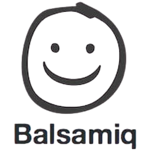
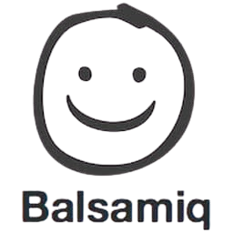
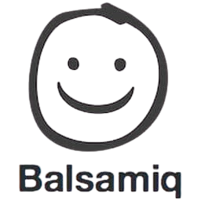
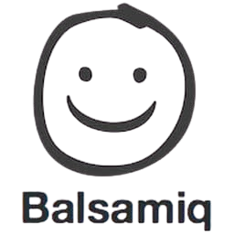

 

"Saya suka silat karena seni bela diri ini mengajarkan saya pentingnya keseimbangan antara kekuatan fisik, ketahanan mental, dan nilai-nilai tradisi yang mendalam. Setiap gerakan adalah refleksi dari kedisiplinan dan ketekunan."
"Dalam jogging, saya menemukan pelajaran tentang ketekunan dan ritme hidup. Setiap langkah mengajarkan saya untuk terus bergerak maju, meskipun dalam kelelahan, sambil menikmati setiap momen perjalanan."

"Taekwondo membuat saya memahami arti fokus dan ketekunan. Melalui latihan yang penuh tantangan, saya belajar menjaga konsistensi dan selalu berusaha memberikan yang terbaik dalam setiap situasi."
"Bergabung dalam event OMK di kapel adalah pengalaman yang selalu memperkuat iman dan kebersamaan. Kegiatan ini mengajarkan saya arti pelayanan dan mempererat hubungan dengan sesama."
"Sebagai petugas koor di kapel, saya merasa terpanggil untuk menyampaikan pujian melalui musik. Pengalaman ini mengajarkan saya arti kerendahan hati, pelayanan, dan keindahan berbagi harmoni dalam komunitas iman."
"Koluchstyl memberikan pengalaman unik dalam seni olahraga tarung bawah (ground fighting). Saya menyukai tantangan ini karena membantu saya memahami kekuatan strategi, keberanian, dan kendali diri dalam situasi yang dinamis."